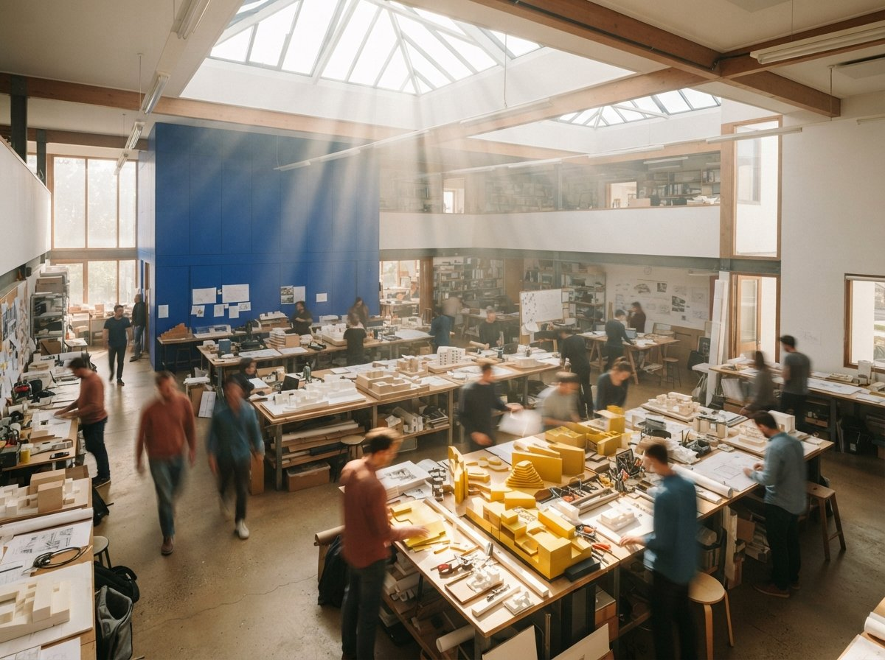
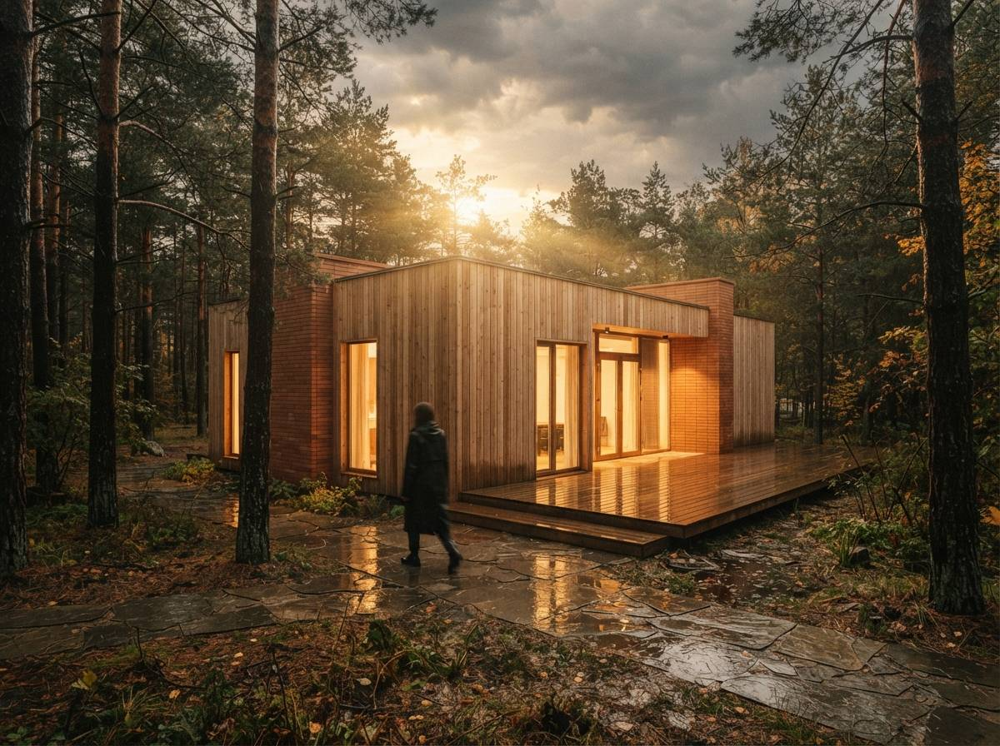

To be fair to the format: the good demonstrators are not lying. The render really did come out of that tool. The problem is that a demo is a performance of a best case, edited by someone who knows which take to keep, and a best case is not a claim you can plan a deadline around. Here is what the cut takes out, and how to put it back in about ten minutes.

The four cuts
1. The input model
Watch the geometry that goes in, not the image that comes out. Demo models are clean: correct scale, sane materials, no stray layers, glazing that is actually glazing and not a face with a glass name. Your live project model at 4pm on a Thursday is none of those things. The single biggest difference between a demo result and your result is almost never the model weights, it is the model, and geometry-aware renderers are the ones most sensitive to this, because they read what you gave them. A tool that turns a tidy massing study into a beautiful dusk shot may do something very different with a real Revit file carrying six consultants' worth of history.
2. The rerolls
"First try" is a claim about editing, not about the tool. Generation is stochastic, and the honest number is not one, it is how many outputs the presenter looked at before choosing. In our own testing the realistic figure for a client-ready image is several attempts plus a pass of repair work, which is why the whole post-production stack exists in the first place. When a video shows one generation and one result, it is showing you the survivor, not the batch.
3. The clock
Screen recordings are cut for pace, and cloud renders are queued. The eleven seconds you watched may have been ninety, and the ninety may have been ninety on a Tuesday morning when nobody else was rendering. Queue time is a real production risk on a shared cloud service, and it is the first thing to move when a tool gets popular, which is one more reason the rented-renderer question matters more than the speed claim.
4. The tier
The account in the demo is almost never the account you would buy. It is a vendor seat, a press seat, or the top tier, with the resolution ceiling, the credit balance, and the priority queue that go with it. The features you just watched may exist on a plan you were not shown the price of.
A demo answers "can this tool do that?" The only question worth money is "can this tool do that, to my model, on a Thursday, at the tier I would actually pay for?"

The ten-minute reproduction
Almost every tool in this category has a free trial or a small credit grant, which means any demo claim is testable before you spend anything. The trap is testing it the way the demo did. Do the opposite.
- Bring your worst model, not your best. Pick a real project file, mid-stage, with the messy layers still in it. The demo already proved the tool works on clean input. That question is answered. The open question is what it does with yours.
- Reproduce the exact claim, once. Same view type, same prompt intent, no cherry-picking. Look at the first output honestly. This is your true first try.
- Then count to a keeper. Keep generating until you get an image you would actually send to a client. Write down the number. That number, not the demo's, is the tool's real cost per usable image, in credits and in minutes.
- Break one thing on purpose. Give it the condition that always breaks renders in your work: a tricky glass corner, a courtyard in shade, a material that has to stay exactly what the client approved. Failure modes are the product. Success is just the brochure.
- Check the receipt. Open the credit balance before and after. Multiply by the number from step three, then by your monthly image volume. That is the real monthly bill, and it usually is not the sticker price.
Ten minutes, and you now know more than any list of thirty tools can tell you, because you tested the only case that matters, which is yours.
Which videos are worth watching
Not all of the format is marketing. Today's sweep held both kinds side by side, and the difference is visible in the runtime.
| Format | What it actually is | Worth your time? |
|---|---|---|
| "Is THIS the most powerful tool?" | A title that withholds the product name to sell the click. The answer is always yes, or there is no video. | No. Read the description for the affiliate link and you have read the review. |
| "10 tools you are missing" | A listicle read aloud over stock footage, usually the same ten names as the written lists. | No. Same content, slower, and you cannot skim it. |
| Launch review of a new version | Real information about real features, made by someone who wants the next early access. | Yes, for the feature list. Ignore the verdict. |
| Full uncut workflow walkthrough | Forty minutes, one project, someone's actual screen, mistakes left in. | Yes. This is the only format where the boring parts survive, and the boring parts are the job. |
The long unedited recording is where the useful stuff hides: the settings panel someone forgets to close, the seed that comes out wrong and gets fixed live, the moment the presenter mutters that this part is always fiddly. Nobody optimises those clips for retention, which is precisely why they are honest. If you only ever watch one video before buying a tool, make it the longest one you can find, not the slickest.
Our take
Video deserves more credit than the written listicle, and we say that having spent months auditing who writes those lists. A screen recording carries evidence that prose cannot: you can see the interface, the click count, the panel the presenter avoids. The trouble is not that demos deceive, it is that architects treat watching as evaluating, and those are different activities separated by about ten minutes of work.
So watch the long one, at 1.5x, with your own model open in the other window. Then go break the tool yourself. A vendor gets to choose the demo. You get to choose the test, and the test is the only one of the two that has your project in it.
The tool passed its audition. It has not passed yours.
Written from the July 13, 2026 intel sweep, in which four of the surfaced results were YouTube videos: a "most powerful AI tool" teaser, a ten-tool roundup, a Veras Revit and SketchUp launch review, and a full ComfyUI archviz workflow walkthrough from Rhino. Reroll counts and trial behaviour from Vista Studios testing on our own project files. No affiliate relationship with any tool, channel, or publisher named.